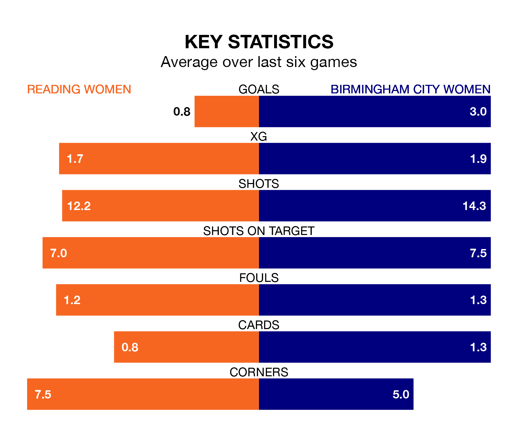

Mid-season relegation candidates Reading Women face a challenge against high-flying Birmingham City Women at the Select Car Leasing Stadium on Sunday.
Reading Women are 10th in the FA Women's Championship table, and have picked up two wins and five draws in their 11 games to date.
The Blues, meanwhile, are top of the standings with 23 points, having won seven and drawn two of their first 12 matches.
Reading are in disappointing form in the FA Women's Championship, with one win and two draws from their last six games.
With six wins and no losses over that period, Birmingham City's form is much better – they have taken 18 points from 18, compared to the Royals's five.
With 23 goals in 12 games so far this season, the Blues are the league's second-highest scorers with 1.9 goals per game. And they are conceding fewer than average, letting in 10 goals at a rate of 0.8 per game.
The hosts, meanwhile, are below average scorers, with 0.9 goals per game, compared to a league average of 1.4. They have conceded 1.4 goals per game.
With Emily Orman between the sticks, Reading can rely on one of the league's safest pair of hands. She has kept four clean sheets in her 11 appearances this season, and only one other 'keeper – Sunderland Women's Claudia Moan – has been able to prevent the opposition scoring on more occasions in the FA Women's Championship.
In the away side's net, Lucy Thomas also has four clean sheets in 12 games.
In the last 10 years, Reading and Birmingham City have played each other on 15 occasions. Reading won four of them, Birmingham City five, and they drew six times.
On average, the Royals scored 1.1 goals and the Blues 1.1 in those matches.
Their last meeting was on November 5, when Birmingham City won 2-1 at home.
Reading's last match was on December 17, a 1-1 draw against Crystal Palace Women, with Lauren Wade getting the goal for the Royals.
Birmingham City beat Sunderland Women 3-0 last time out, also on December 17, with Brianna Westrup (own goal), Jade Moore and Lily Agg on the scoresheet.
Updated: 10:02 (UTC), 19/01/24